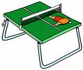
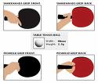
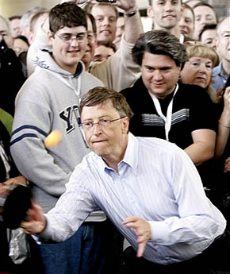
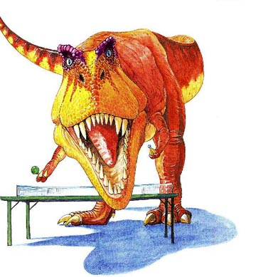

Rules

Rules- The winner of(3 out 5)(5/7 or7/9) shall be declared winner.
- The ball shall be spherical in shape, shall be orange or white in colour.
- Service shall commence with the ball resting freely on the palm of the server, thereby allowing the opponent to be prepared before serving.

- The rally shall be a let, meaning if the ball touches the net while serving, the service shall be repeated.
- A game shall be won by the player first scoring 11 points, unless both player scores 10 points then shall the game be won by the first gaining a lead point of two
- A match shall be decided between the best of any odd number of games.
Tips

Tips- Never start a match without warming up for at least 5 minutes before commencement of a match.
- Attack whenever you receive a long serve, players that play an offensive game generally win more points.
- Practise more often with your backhand because the forehand is usually stronger than the backhand.

- Avoid serving long service while playing to prevent your opponent from attacking the ball quickly.
- Keep your eyes on the racket of your opponent when receiving a serve rather than the ball, because you don't want deception from the server.
- Control your temper when losing a match, enquire from yourself what the best solution might be to get back on track, and never give up the spirit of sportsmanship while losing.
Aims of Club

- To encourage the students at NCI witness and experience the beauty of playing Table Tennis.
- To develop NCI as the best College producing profesional and Amateur players in Ireland.

- Due to our experience as profesional table tennis players, we intend to pass on the knowledge to willing and promising to be players.
- To make participants realise that table tennis is a sport that accomodate every gender, sex and no age limit.
- To make it as a forum whereby all NCI students from different faculties can meet and interact.